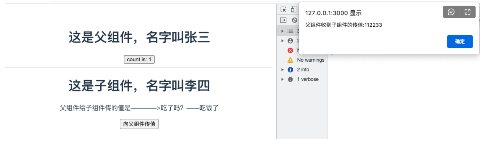

Contents
12. Vite¶
12.1. 1.vite创建项目¶
创建项目vite项目
#------------------------ 创建项目vite项目 ------------------------------
# npm 6.x
npm init vite@latest vue3-admin --template vue
# npm 7+, 需要额外的双横线：
npm init vite@latest vue3-admin -- --template vue
# yarn
yarn create vite vue3-admin --template vue
# pnpm
pnpm create vite vue3-admin -- --template vue
#------------------------ vite生成ts项目 ------------------------------
npm init vite@latest my-vue-app --template vue-ts
# npm 7+, 需要额外的双横线：
npm init vite@latest my-vue-app -- --template vue-ts
# yarn
yarn create vite my-vue-app --template vue-ts
# pnpm
pnpm create vite my-vue-app -- --template vue-ts
安装依赖并运行项目
cd projectName
npm install
npm run dev
如果遇到如下报错
/Users/cuiliang/coding/myblog_pc/node_modules/esbuild/bin/esbuild:2
throw new Error(`esbuild: Failed to install correctly
^
Error: esbuild: Failed to install correctly
Make sure you don't have "ignore-scripts" set to true. You can check this with
"npm config get ignore-scripts". If that returns true you can reset it back to
false using "npm config set ignore-scripts false" and then reinstall esbuild.
If you're using npm v7, make sure your package-lock.json file contains either
"lockfileVersion": 1 or the code "hasInstallScript": true. If it doesn't have
either of those, then it is likely the case that a known bug in npm v7 has
corrupted your package-lock.json file. Regenerating your package-lock.json file
should fix this issue.
手动运行
node node_modules/esbuild/install.js来解决esbuild安装问题。
更新vue版本
npm install vue@next
12.2. 2.vite2配置¶
12.2.1. 2.1 alias别名配置¶
在根目录下vite.config.js文件中添加alias
import {defineConfig} from 'vite'
import vue from '@vitejs/plugin-vue'
import path from 'path';
// https://vitejs.dev/config/
export default defineConfig({
alias: {
'@': path.resolve(__dirname, 'src')
},
plugins: [vue()]
})
使用方法：修改src/App.vue
<script setup>
// 原方式
// import HelloWorld from './components/HelloWorld.vue'
// 别名引用
import HelloWorld from '@/components/HelloWorld.vue'
</script>
如果使用webstorm并不能自动识别别名。需要手动指定webstorm配置文件
在项目的根目录新建一个新文件 webstorm.config.js
'use strict'
const path = require('path')
function resolve (dir) {
return path.join(__dirname, '.', dir)
}
module.exports = {
context: path.resolve(__dirname, './'),
resolve: {
extensions: ['.js', '.vue', '.json'],
alias: {
'@': resolve('src'),
}
}
}
进入 WebStorm preferences -> Language & Framework -> JavaScript -> Webpack，选择这个文件即可
实际开发过程中发现webstorm对script setup智能提示并不完全适配。预计2021.2版本解决这个问题。参考issue：https://youtrack.jetbrains.com/issue/WEB-49000
12.3. 3.setup script语法示例¶
分别创建src/components/HelloWorld.vue(父组件)和src/components/Test.vue(子组件)。
演示setup script的基本用法
HelloWorld.vue(父组件)
<template>
<h1>这是父组件，名字叫{{ name }}</h1>
<button type="button" @click="valueAdd">
count is: {{ state.count }}
</button>
<hr/>
<Test msg="吃了吗？" :status="state.count%2===0 ? '没吃饭' : '吃饭了'" @toFather="toFather"/>
</template>
<script setup>
// 引入组件
import {ref, reactive, onMounted} from 'vue'
import Test from '@/components/Test.vue';
// 定义变量
const name = ref('张三')
const state = reactive({count: 0})
// 定义方法
const valueAdd = () => {
state.count++
}
// 获取子组件的传值
const toFather = (value) => {
alert('父组件收到子组件的传值:' + value)
}
// 生命周期函数
onMounted(() => {
console.log("执行onMounted函数")
});
</script>
<style scoped>
a {
color: #42b983;
}
</style>
Test.vue(子组件)
<template>
<h1>这是子组件，名字叫{{ name }}</h1>
<p>父组件给子组件传的值是————>{{ msg }}——{{ status }}</p>
<button type="button" @click="toFather">
向父组件传值
</button>
</template>
<script setup>
// 引入组件
import {ref} from "vue";
// 定义变量
const name = ref('李四')
// 组件属性参数(子组件接收父组件传值)
const props = defineProps({
msg: String,
// 参数校验与默认值
status: {
type: String,
required: false,
default: '未定义',
},
})
// 定义事件(子组件向父组件传参)
const emit = defineEmit(['toFather']);
const toFather = () => {
emit('toFather', '112233');
}
</script>
<style scoped>
</style>
3.效果演示
12.4. 4.加入vue-router¶
12.4.1. 4.1 安装¶
npm install vue-router@4 -S
12.4.2. 4.2 创建配置文件¶
src/router/index.js
import {createRouter, createWebHistory} from 'vue-router';
const router = createRouter({
// history: createWebHashHistory(), // hash模式，
history: createWebHistory(), //h5模式createWebHistory
routes: [
{path: '/', component: () => import('@/views/Home.vue')},
{path: '/test', component: () => import('@/views/Test.vue')}
]
})
// 路由导航守卫
// router.beforeEach((to, from, next) => {
// // to 访问的路径 from 从哪来 next 响应路径
// if (to.meta.isAuth === true && JSON.stringify(store.state.userSession) === '{}') {
// Toast.fail('还未登录，即将跳转至登录页')
// return next('/login_register')
// } else {
// next()
// }
// })
export default router;
12.4.3. 4.3 在 main.js 中引入¶
import {createApp} from 'vue'
import App from './App.vue'
import router from '@/router';
const app = createApp(App)
app.use(router)
app.use(store)
app.mount('#app')
12.4.4. 4.4 在App.vue中使用¶
<template>
<!-- 路由匹配到的组件将渲染在这里 -->
<router-view></router-view>
</template>
<script setup>
</script>
<style>
</style>
12.5. 5.加入vuex¶
12.5.1. 5.1 安装vuex¶
npm install vuex@4 -S
想要将vuex数据持久化，还需要安装vuex-along
npm install vuex-along -S
12.5.2. 5.3 创建配置文件¶
src/store/index.js
import {createStore} from 'vuex'
import mutations from '@/store/mutations'
import state from "@/store/state";
import createVuexAlong from 'vuex-along'
export default createStore({
state,
mutations,
plugins: [
createVuexAlong({
local: {
list: [],
},
session: {
list: ["count"],
}
})
]
})
src/store/state.js
const state = {
count: 0
}
export default state
src/store/mutations.js
const mutations = {
add(state) {
state.count++
}
}
export default mutations
12.5.3. 5.4 在 main.js中引入¶
import {createApp} from 'vue'
import App from './App.vue'
import router from "@/router";
import store from '@/store';
const app = createApp(App)
app.use(router)
app.use(store)
app.mount('#app')
12.5.4. 5.5 在Home.vue中使用store¶
<template>
<h1>{{ msg }}</h1>
<h1></h1>
<button @click="$store.commit('add')">count is: {{ $store.state.count }}</button>
<p>Edit <code>components/HelloWorld.vue</code> to test hot module replacement.</p>
</template>
<script>
export default {
name: 'HelloWorld',<template>
<h1>这是首页</h1>
<button @click="valueAdd">{{ value }}</button>
</template>
<script setup>
import store from '@/store/index'
import {computed} from "vue";
const value = computed(() => store.state.count)
const valueAdd = () => {
store.commit('add')
}
</script>
<style scoped>
</style>
props: {
msg: String
}
}
</script>
12.6. 6.加入SASS¶
12.6.1. 6.1 安装sass¶
npm install sass -D
npm install sass-loader -D
npm install node-sass -D
12.6.2. 6.2 安装normalize.css初始化样式¶
npm install --save normalize.css
12.6.3. 6.3 新建style目录保存各种样式¶
12.6.4. 6.4 index.scss组织样式¶
并编写全局样式
@import "./normalize.css";
@import "./element-ui.scss";
@import "./transition.scss";
@import "./variable.scss";
@import "./theme.scss";
body {
margin: 0;
padding: 0;
box-sizing: border-box;
background-color: $color-background-base;
}
12.6.5. 6.5 main.js中引入index.scss¶
import {createApp} from 'vue'
import App from './App.vue'
import router from '@/router';
import store from '@/store';
import '@/assets/style/index.scss'
const app = createApp(App)
app.use(router)
app.use(store)
app.mount('#app')
12.6.6. 6.6 vite.config.js添加全局scss变量文件¶
import {defineConfig} from 'vite'
import vue from '@vitejs/plugin-vue'
import path from 'path';
// https://vitejs.dev/config/
export default defineConfig({
alias: {
'@': path.resolve(__dirname, 'src')
},
plugins: [vue()],
css: {
preprocessorOptions: {
scss: {
additionalData: `@import "@/assets/style/variable.scss";`
}
}
}
})
12.6.7. 6.7 Home.vue使用全局变量¶
<template>
<h1>这是首页</h1>
<button @click="valueAdd">{{ value }}</button>
</template>
<script setup>
import store from '@/store/index'
import {computed} from "vue";
const value = computed(() => store.state.count)
const valueAdd = () => {
store.commit('add')
}
</script>
<style scoped lang="scss">
h1 {
color: $color-primary;
}
</style>
12.7. 7.加入axios¶
12.7.1. 7.1 安装axios¶
npm i axios -D
12.7.2. 7.2 封装axios¶
src/api/home.js
import index from './index'
src/api/index.js
import {request} from './request'
const index = {
get(url, params) {
const config = {
method: 'get',
url: url
}
if (params) {
for (let key in params) {
if (params[key].length === 0) {
delete params[key]
}
}
config.params = params
}
return request(config)
},
getFile(url, params) {
const config = {
method: 'get',
url: url,
responseType: 'blob'
}
if (params) config.params = params
return request(config)
},
post(url, params) {
const config = {
method: 'post',
url: url
}
if (params) config.data = params
return request(config)
},
put(url, params) {
const config = {
method: 'put',
url: url
}
if (params) config.data = params
return request(config)
},
delete(url, params) {
const config = {
method: 'delete',
url: url
}
if (params) config.params = params
return request(config)
}
}
export default index
src/api/request.js
import axios from 'axios'
export function request(config) {
// 创建axios的实例
const instance = axios.create({
baseURL: import.meta.env.VITE_APP_BASE_URL,
timeout: 20000
})
// 请求拦截器配置
instance.interceptors.request.use(config => {
// config.headers.Authorization = window.sessionStorage.getItem('token')
return config
}, error => {
console.log(error)
return Promise.error(error)
}
)
// 响应拦截器配置
instance.interceptors.response.use(response => {
return response.data
}, error => {
console.log(error)
switch (error.response.status) {
case 400:
return Promise.reject(error.response.data)
case 401:
console.log("无权访问")
break
case 403:
console.log("token过期啦")
//window.location.href="/login"
break
case 404:
console.log("404啦")
break
default:
return Promise.reject(error)
}
return Promise.reject(error)
})
// 发送真正的网络请求
return instance(config);
}
export default request
12.7.3. 7.3 开发生产环境变量¶
项目开发过程中通常会有好几个环境，比如dev.test.development等模式，往往我们也需要在不同的环境下会有些值对应会变化，最常见的就是后台的接口api,开发环境的api和生产环境的api是不一致的，所以我们需要进行配置,在vite中我们需要进行这样的配置。
参考文档：https://cn.vitejs.dev/guide/env-and-mode.html#env-files
package.json指定mode
{
"name": "myblog_pc",
"version": "0.0.0",
"scripts": {
"dev": "vite --mode development",
"build": "vite build --mode production",
"serve": "vite preview"
},
…………
}
项目根目录创建.env.development文件
ENV= 'development'
VITE_APP_TITLE = '测试环境'
VITE_APP_BASE_URL = 'http://127.0.0.1:8000/'
项目根目录创建.env.production文件
ENV= 'production'
VITE_APP_TITLE = '生产环境'
VITE_APP_BASE_URL = 'https://api.cuiliangblog.cn/'
src/api/request.js使用环境变量
// 创建axios的实例
const instance = axios.create({
baseURL: import.meta.env.VITE_APP_BASE_URL,
timeout: 20000
})
12.8. 8.使用element-plus¶
12.8.1. 8.1 安装element-plus¶
npm install element-plus --save
12.8.2. 8.2 安装lodash¶
npm install lodash --save
12.8.3. 8.3 全局引入element-plus(不推荐)¶
import {createApp} from 'vue'
import App from './App.vue'
import '/style/index.scss'
import {router} from './router'
import store from './store'
import ElementPlus from 'element-plus'
import 'element-plus/lib/theme-chalk/index.css'
const app = createApp(App)
app.use(router)
app.use(store)
app.use(ElementPlus)
app.mount('#app')
12.8.4. 8.4 手动按需引入element-plus（推荐）¶
1. 创建配置文件plugins/ElementPlus.js¶
import {ElButton} from 'element-plus'
import 'element-plus/lib/theme-chalk/el-button.css'
export default function (app) {
app.use(ElButton)
}
2. main.js引入¶
import {createApp} from 'vue'
import App from './App.vue'
import '/style/index.scss'
import {router} from './router'
import store from './store'
import ElementPlus from './plugins/ElementPlus'
const app = createApp(App)
app.use(router)
app.use(store)
app.use(ElementPlus)
app.mount('#app')
12.8.5. 8.5 自动按需引入element-plus（强烈推荐）¶
1.安装 vite-plugin-style-import¶
npm install vite-plugin-style-import -D
2.修改vite.config.js¶
import {defineConfig} from 'vite'
import vue from '@vitejs/plugin-vue'
import path from 'path';
import styleImport from 'vite-plugin-style-import'
// https://vitejs.dev/config/
export default defineConfig({
alias: {
'@': path.resolve(__dirname, 'src')
},
plugins: [
vue(),
styleImport({
libs: [{
libraryName: 'element-plus',
esModule: true,
ensureStyleFile: true,
resolveStyle: (name) => {
name = name.slice(3)
return `element-plus/packages/theme-chalk/src/${name}.scss`;
},
resolveComponent: (name) => {
return `element-plus/lib/${name}`;
},
}]
})
],
css: {
preprocessorOptions: {
scss: {
additionalData: `@import "@/assets/style/variable.scss";`
}
}
}
})
3.创建配置文件plugins/ElementPlus.js¶
import {ElButton} from 'element-plus'
export default function (app) {
app.use(ElButton)
}
4.main.js引入¶
import {createApp} from 'vue'
import App from './App.vue'
import '/style/index.scss'
import {router} from './router'
import store from './store'
import ElementPlus from './plugins/ElementPlus'
const app = createApp(App)
app.use(router)
app.use(store)
app.use(ElementPlus)
app.mount('#app')
5. src/views/Home.vue使用¶
<template>
<h1>这是首页</h1>
<button @click="valueAdd">{{ value }}</button>
<el-button type="primary">主要按钮</el-button>
</template>
<script setup>
import store from '@/store/index'
import {computed} from "vue";
const value = computed(() => store.state.count)
const valueAdd = () => {
store.commit('add')
}
</script>
<style scoped lang="scss">
h1 {
color: $color-primary;
}
</style>
12.9. 9.使用typescript¶
12.9.1. 9.1 安装typescript¶
npm install typescript
12.9.2. 9.2 初始化ts配置文件¶
tsc -init
然后将tsconfig.json中的“strict”改为false
12.9.3. 9.3 修改 main.js文件类型¶
将 main.js 改为 main.ts
12.9.4. 9.4修改index.html引入¶
将 index.html 中引入的 main.js 改为 main.ts。
12.9.5. 9.5 添加类型声明文件¶
ts只认识以.ts结尾的文件，并不认识.vue结尾的文件，因此要在项目的/src文件下创建一个.d.ts文件来定义一下.vue文件：
// src/main.d.ts
declare module '*.vue' {
import {ComponentOptions} from 'vue';
const componentOptions: ComponentOptions;
export default componentOptions;
}
12.9.6. 9.6 编写ts测试代码¶
现在就可以 app.vue 中使用 TypeScript
<script lang="ts">
import HelloWorld from './components/HelloWorld.vue'
export default {
name: 'App',
components: {
HelloWorld
},
setup(){
const msg:string = 'hello'
alert(msg)
}
}
</script>
12.10. 10.vite.config.js 配置¶
12.10.1. 10.1 别名配置¶
const {resolve} = require('path')
export default {
alias: {
'/@/': resolve(__dirname, 'src'),
'/components/': resolve(__dirname, "src/components"),
'/style/': resolve(__dirname, "src/assets/style"),
'/images/': resolve(__dirname, "src/assets/images")
}
}
//使用
import HelloWorld from '/components/HelloWorld.vue'